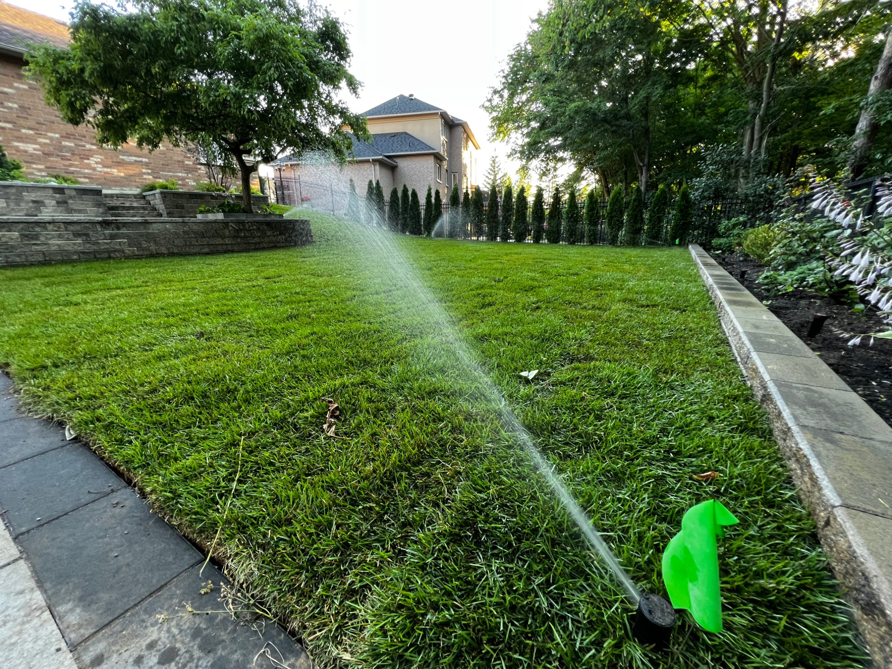
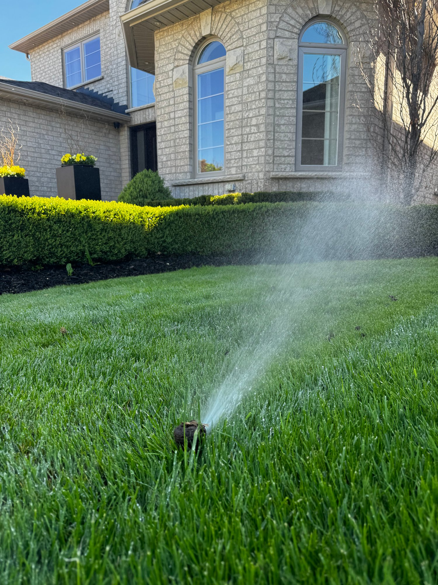
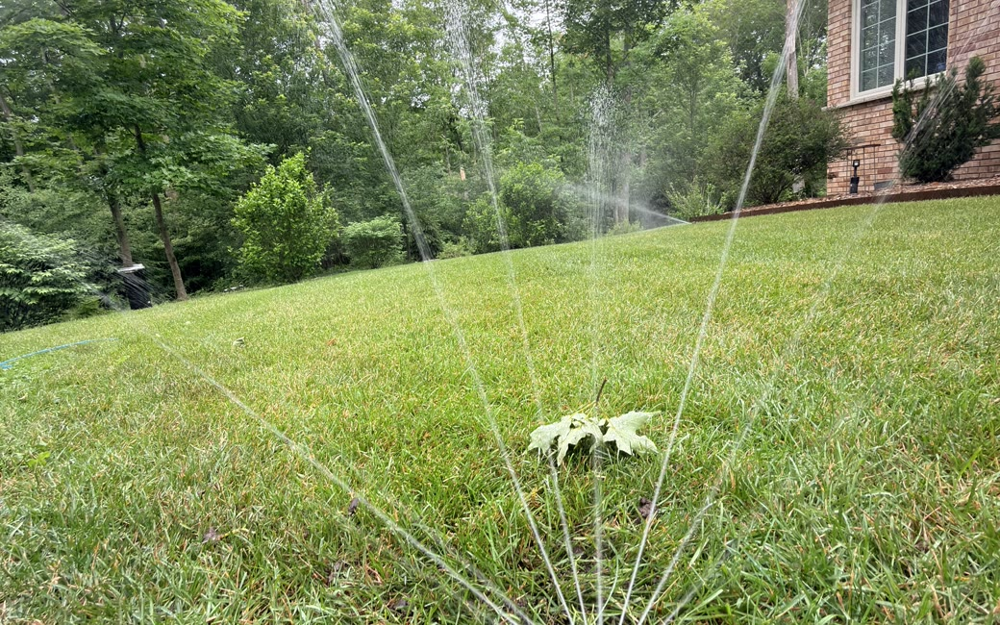

Fresh sod is basically a field of grass with its roots cut off, laid on soil it hasn't attached to yet. For the first couple of weeks it can't feed itself — it depends entirely on you keeping it wet while it knits into the ground. Get the watering right and it roots into a seamless lawn. Get it wrong, even for a hot afternoon, and you'll watch the seams go brown. Here's the schedule that works in our climate.
New sod needs to stay consistently moist for the first two weeks — usually watering 2–3 times a day, then tapering off as it roots. Don't mow until it's anchored, about 2–3 weeks, when a gentle tug won't lift it. A smart controller makes the tapering schedule automatic so you don't have to think about it.

How often should you water new sod?
Week one: water 2–3 times a day, enough to keep the sod and the soil beneath it damp — never let it dry out. Week two: drop to 1–2 times a day as roots start to grip. Week three onward: taper toward a normal deep, infrequent schedule. Heat and wind mean more; cool and cloud mean less.
On the heavy clay soil across most of the GTA there's a balance to strike: clay holds moisture well, so you can overdo it and drown the roots, but it also sheds water fast when it's dry and crusted. Short, frequent cycles early on beat one long soak — you want damp, not swamped.

How long before you can mow new sod?
Wait until the sod has rooted — usually 2–3 weeks — and test it first: give a corner a gentle tug, and if it resists instead of lifting, it's anchored. Let it dry enough to mow without rutting, keep the blade high and sharp, and never cut more than a third of the height at once.
Why does new sod turn brown or lift at the seams?
Nine times out of ten it's underwatering — usually at the edges and seams, which dry out first. Brown, shrinking strips with gaps opening between rolls almost always mean the water isn't reaching those margins. The fix is more frequent watering and making sure coverage reaches the edges, not more water in the middle.

Can your sprinkler system water new sod for you?
Yes — and it's the easiest way to get establishment right. A sprinkler system can run a dedicated new-sod schedule of short, frequent cycles, and a smart controller like Hydrawise can automate the two-week taper and adjust for rain and heat, so the sod gets exactly what it needs without you dragging a hose at 6 a.m.
If you've got an irrigation system, the establishment schedule is a five-minute setup — and if it's a Hydrawise controller, the taper and the weather adjustments run themselves.

We don't lay sod — but we'll dial in the watering.
If you're putting sod in and want your irrigation set to establish it cleanly, we can program the schedule and make sure coverage reaches every seam. And if your system needs a smart controller to handle the taper automatically, that's the Hydrawise upgrade.
See the Hydrawise upgradeA note from PJL
Just to be clear: we don't lay sod. But if you're putting some in and want your irrigation dialled in to establish it cleanly, we can set the schedule and make sure coverage reaches every seam. Call (905) 960-0181 or book online.